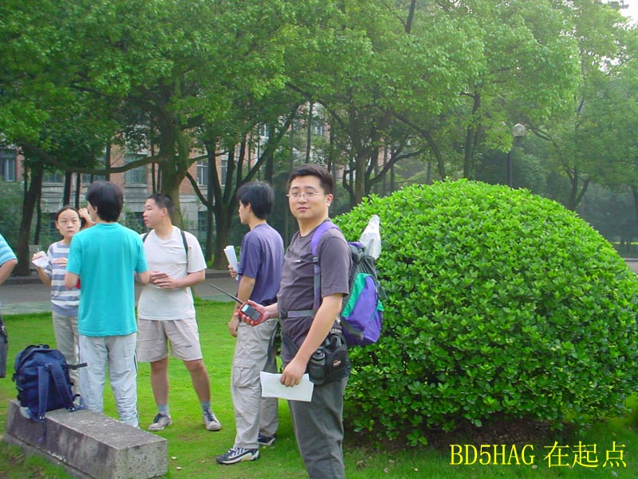
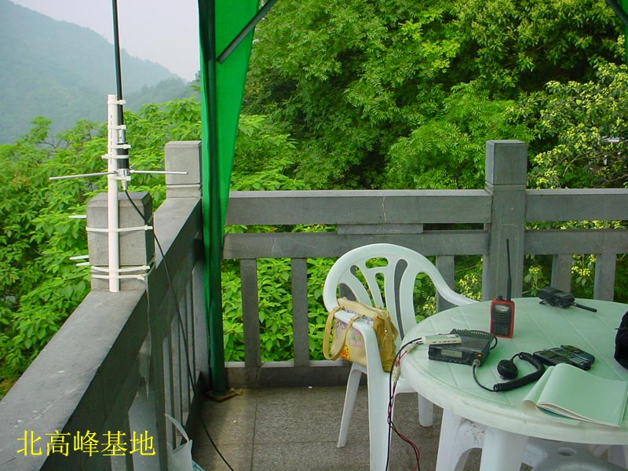
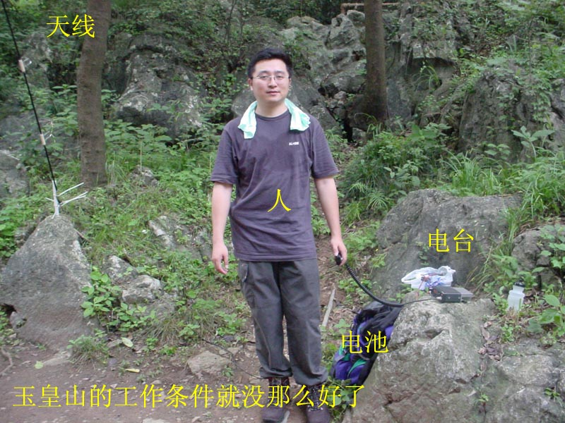
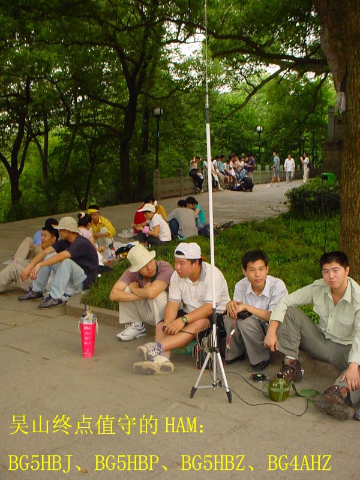
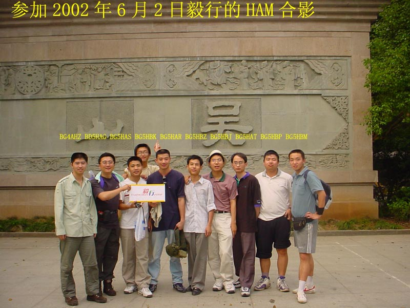
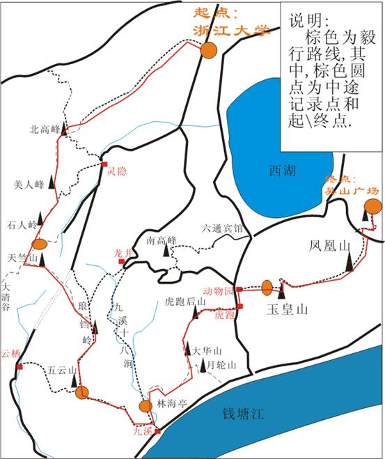

 为支援浙大BBS的Holiday板组织的活动，杭州的HAM几乎顷巢出动，在今天提供了无线通讯支援。 这次的毅行活动是有152位浙大学生参加，从浙大玉泉校区内的老和山出发，沿西湖周围的群山走8小时，约20公里左右的山路。由于路线很长，道路情况复杂，参加同学的体力不一，我们在沿途的山上设置了7个固定点，根据具体情况使用车台基地台天线或手持机，负责经过登记及通讯中转；在先导队和扫尾队中安排了我们的BG5HAR和BG4AHZ，在队伍中也间隔安排了三位HAM。活动取得了成功，最后共有74位同学走完全程，只有1位同学因伤下山，所有同学在天黑以前都安全回到学校。
各个点使用的设备是： 北高峰：DR430，BG5UYW的铝合金天线，4AH电池 石人亭：TK868，NH707车天线，7AH电池 防火亭：C450手持机，自制软J-Pole天线 虎跑：SM120，N707车天线，7AH电池 玉皇山：同北高峰 其他点均为手持机
 特别要感谢BG5UYW特别为我们安排紧急出货，赶在活动前将两副铝合金天线送到杭州。这种天线轻便小巧，效率高，增益也不错。它是分段拆装的，所以携带方便，拆下来全长不超过0.6米；架设又很容易，我到一个点不用5分钟就能把全部设备装备好开始工作。这次在北高峰顶，由于高度有300米，加上天线好，我一直是开3W的小功率（我这部DR430经BD5DAA特别调小了），能保证全部通讯联络，一颗4AH的电池就坚持了5个小时不间断的联络。
这次还要感谢BA7JG，安排他代理的Garmin的GPS手持机eTrex快速出货给我，让我在活动前能有时间将相关点进行测量绘图。
 本地有一位火腿将摄影用的三脚架改装，来装NH707天线，这样到一个地方不需要寻找固定天线的地方，支起来就能工作，也十分地方便。
这次活动跟我们以往的活动有一个非常大的不同，就是这次活动我们不是自己玩电台，我们是要为别人提供服务。活动的组织者不是我们，我们要配合组织者的要求。作为玩电台也许我们只是到一个地方，架起电台，和能联络到的电台联络上就OK了。但是提供服务就必须在玩之外做更多的事情，在已经确认联络的电台之间反复传递一些信息。甚至在整个通讯过程中控制局面、传递中转等技能，和我们平时的联络是很不同的。
 这种活动组织性很强，我们事前做了大量的准备工作，行动计划都5易其稿，印出来每个人随身带上。在前一个周末我们几位HAM专门实地走过这段路，考察设台地点和沿途通讯情况。531和61两天晚上开会讨论行动方案，每个人在哪个位置上，起什么作用，什么时候到位什么时候撤，什么情况下怎样应变都有详细明确的规划。所有的人一旦参与就要负起他那个位置上的责任，如果有事临时不能到我们都要采取紧急应变措施。比如BD5HAM原来是负责玉皇山这个点的，要求他1点钟到位，但是他的公司突然有事要加班，在10点钟左右通知我，当时我还在北高峰上。我们当即决定由位于先导队的BG5HAR（当时他走到五云山）脱离先导队，从公路直接穿插到玉皇山；同时在扫尾队的BG4AHZ通过五云山后，我也携带北高峰上的设备下山从公路直接到玉皇山接应BG5HAR。结果下午2点我在BG5HAR之前赶到玉皇山，并在老玉皇宫架起了临时电台，保证了这一段的通讯，BG5HAR则继续随先导队到吴山。就是因为我们我们这次不是自己玩电台，是要为150余位学生的安全负责，所以整个活动尽管完全是业余的，自发的，没有任何机构来组织，但是我们抱着业余电台服务社会的态度，认真地完成了任务。 整个活动中的“意外”情况还有：
而且为了频率的安全，活动使用的UHF频率直到61晚上才在开会时当面宣布，并且规定不准在任何地方公布。我们前一个周末试走的时候在某论坛公布了频率的，但是当时上山就遭到了恶意干扰。
整个活动我们先后出动了18位火腿，事先以浙大无线电运动协会的名义向省协会做了汇报，省协会向省无管局做了汇报。
这次的活动充分地考验了杭州火腿的紧急动员能力，大家用自己的爱好提供了社会服务，取得了大量宝贵经验，也得到一些教训：
6月2日环西湖群山定向穿越活动通讯支援计划
浙大BBS的Holiday板计划于6月2日星期天，组织学生从浙大玉泉校区上老和山，经将军山、锅子顶到北高峰，绕美人峰走石人岭翻白马坡到天上山，再转入十里郎当到五云山，下九溪从林海亭对面上马鞍山到虎跑后山，从动物园下虎跑路到玉皇山，再走过万松岭到云居山、紫阳山最后到吴山下山。
目前报名参加的学生大约有200余名，分成40支队伍。
按照他们的活动计划，我们安排7个固定工作点，一支先导队一支扫尾队，一支三人机动队。在以下7个工作点设置临时电台：
1. 北高峰，由BD5HAG负责，坐索道缆车上去，使用车台和固定台天线；
2. 石人亭，由小胖负责，从杨家牌楼上山，使用车台和车天线；
3. 十里郎当防火亭，由mooner负责，从龙井上山，使用手持机和软天线；
4. 五云山真际寺遗址，由BD5HAA负责，从九溪上山，使用手持机；
5. 九溪林海亭，由BG5HAU负责，使用手持机
6. 虎跑后山，由小詹负责，从虎跑上山，使用车台和固定台天线；
7. 玉皇山，由BD5HAM方向负责，使用车台和固定台天线。
另外，BG5HAR吴炯参与在第一个队伍中作为先导队，BG4AHZ陈嵩参与在最后的扫尾队中。另外有两位爱好者Armorman李敏和guanguan官学彬会携带对讲机参与在其中的两个队伍中，而在林海亭我们会安排jimyh杨浩等三位爱好者分别临时加入队伍带他们走后面的路段。
通讯使用70厘米波段，初步确定使用434.90MHz同频单工工作。如果临时需要改变频率，会以电话通知。
Holiday板在工作点的工作人员，主要负责登记过路的队伍，介绍道路，提供药品，及指点体力不支的同学就近下山。我们在工作点的电台，主要提供工作点之间的通讯联络，以及与在队伍中的电台的联络，为他们指路。北高峰的电台，还要负责从老和山到北高峰、从北高峰到天上山两段路线中的随队电台在必要时与虎跑基地的中转。玉皇山的电台也要在必要的时候提供中转服务。
另外根据实际情况，我们无法为每一支队伍配备一名业余电台爱好者，而沿途基本上移动电话能断续地覆盖，我们会在基地守听移动电话。当队伍中出现问题而没有我们的爱好者跟随的时候，可以打移动电话到基地，再由我们通过电台通知附近的工作点的工作人员前往处理。
7个固定工作点的时间安排如下：
|
点 |
负责 |
路径 |
到位时间 |
经过时间 |
撤离时间 |
|
北高峰 |
BD5HAG |
索道 |
|
|
防火亭 |
|
石人亭 |
虞俊 |
杨家牌楼 |
|
|
石人亭 |
|
防火亭 |
Mooner |
龙井 |
|
|
防火亭 |
|
五云山 |
BD5HAA |
九溪 |
|
|
五云山 |
|
林海亭 |
BG5HAU |
九溪 |
|
|
林海亭 |
|
虎跑 |
BD5HMA |
虎跑 |
|
|
玉皇山 |
|
玉皇山 |
BD5HAM |
长桥 |
|
|
结束 |
每个点和队伍的参加人员有：
l 北高峰：BD5HAG
l 石人亭：小胖
l 防火亭：mooner，lylyer
l 五云山：BD5HAA、dtclean
l 林海亭：BG5HAU、杨浩、蔡雄飞、陈家干
l 虎跑：BD5HMA、小詹
l 玉皇山：BD5HAM
l 先导队：BG5HAR
l 扫尾队：BG4AHZ
l 机动队：杨浩、蔡雄飞、陈家干
各队必须在上述指定的时间之前到位，到位后向中心报告。在虎跑中心建立起来之前，向北高峰报告。
各队应携带以下装备：
1. 70厘米手持机一部
2. 备用电池一套
3. 自用的饮水至少1500mL
4. 地图（周六开会时发）
5. 本计划书（周六开会时发）
6. 干粮（三片面包即可）
7. 照相机，记录我们的工作场景，咔咔
固定点还应准备以下装备：
1. 额外的70厘米手持机一部，必要时提供给Holiday板的工作人员使用
2. 使用手持机的应有一根长的手持机天线
3. 创可贴一些、风油精一瓶（周六开会时发），必要时可以提供给过路的学生
另外个人自己带好身份证、会员证、操作证和电台执照。
这次活动并不是由我们主办，我们只是协助主办者提供通讯支援，并不干涉主办者对于活动的设计和安排。因此特别是在固定点和先后两队的爱好者，要根据主办者的要求开展工作，不能因为我们提供了通讯服务而变成了组织者。
各移动台在呼叫时，应首先直接呼叫虎跑中心，虎跑中心尚未建立之前呼叫北高峰。如果无法呼叫到虎跑中心，能听到的各固定点要回答他们的呼叫，并代转信息到虎跑。
路上岔路口在前一天都会做好路线标记，所以基本上不需要特别地指路，如果有指路的问题，尽量通过网络由处于先导队的touchwind和扫尾队的bonny来回答。
附：路线说明
浙大校园――老和山――北高峰
进入浙大校门，沿着右侧的路一直走到底是图书馆，继续右转，经过第七教学楼，有缓坡向上行，快到尽头处有一铁门，门边标有红色箭头，旁书“上山”，于是穿过铁门依照箭头方向上山，无岔路，至山顶后左行，路刚修过，为极好的石板路，经过第二个凉亭之后（注意是第二个凉亭），到一四岔口，选择前方右侧的路上山，经过一小段的坑坑洼洼的上坡路之后，前方又变为很平整的石板路，沿着石板路狂奔，可以见到路的右侧山上有电视铁塔、索道，那里便是北高峰了。
北高峰――美人峰――石人岭小屋
北高峰上有天下第一财神殿，地方不大，可做小憩（当然如果你已经遥遥领先了，还有时间去烧柱香，也许今年就发了，下半辈子可以啥也不做，就在外面晃荡了，不过门票5元千万不要忘了买哦），然后继续出发，朝来时方向的另一条岔路沿墙而行，走不多远，有一开阔之地，仔细观察可以发现路的左侧有很明显的小路向下行，于是沿着小路下山，途中不要偏离正道，一直向前，当走到一明显岔路口时，仔细观察路边的指路石碑，选择前方右侧的路继续前进，走着走着就走到铁丝网前面了，找到铁丝网的缺口钻进去（此时已是部队驻地范围之内，千万走的小心翼翼，当心缴枪不杀），向上走，再次见到铁丝网上的缺口时，再钻回去，一路向下，坡有些陡，注意保持平衡，上下数回后，远远可以见到山下方有一间石屋，即石人岭小屋。
石人岭小屋――天竺山――十里郎当
从石屋左侧门出去，有三条路，选择右边向上的山道（注意千万别走到右边向前的那条路上去，此路不通），如果以中速前进的话，10分钟后便到达一向下的岔路，有平整的石阶，不必理会，继续前进，一路仔细观察左右两边是否有其他岔路，又大约10多分钟的路程之后，你会发现左侧身后有一条向上行的路，选择此路上山，路上若遇明显岔路大都选择右边的路（此一路上路况比较复杂，非常容易迷失方向，有一点提示大家的是：注意观察山下的景物，起先你应该走在梅灵公路的北面，走了一段之后梅灵公路应该从你脚下穿过，然后你就走到了梅灵公路的南面），方向正确的话，从石屋出发一个多小时之后，可以到达一个微波站，选择走微波站前面的路，这样经过三个微波站之后，下山，见到一片茶园，此时已经来到十里郎当之上。
十里郎当――五云山――九溪林海亭――虎跑后山
十里郎当的尽头是五云山顶的真际寺，现为遗址。从真际寺出发，选择左边的台阶下山，到了九溪玫瑰园边上，走几步，左手有一小片茶园，有一条石板铺就的路，沿路下行到徐村，出村口有一山门，上书五云山（一路都有绿色荧光粉的标志），面前一马路，九溪路，右手走即出山，左手走可达林海亭。过林海亭再前行30米，路东有一小路进山谷伴溪而行，沿着山中之字形小路攀援而上至马鞍山，此处西湖南山小路的工程已开工，原有的小路已拓宽到了5~6尺宽，沿路直达虎跑后山顶，山顶有一在建亭子，顺着亭子边上的台阶下到虎跑。
虎跑后山――玉皇山――凤凰山
从虎跑正门出来，沿着虎跑路向东，到动物园之后从对面的小路上山，半山腰有一石屋供人歇脚，雪白的墙壁上题着一首李商隐的诗，出了石屋之后沿着石台阶向上走，走到玉皇山的盘山公路上之后，向前走一段，找到下山的路，也是台阶路，非常好走，半山腰处有一间亭子，经过亭子向前走不远路的右侧有一枯藤老树，从树下钻过去，沿着那条路再次上山，是泥路，其中有一段坡比较陡，不太好走，一直来到山顶，路边出现了指路牌，选择去凤凰山的方向（当然也可选择圣果寺、月岩方向，殊途同归），此后一路石阶，再次见到路牌时，选择修内司窑的方向，下得山来便是新修的万松书院。
凤凰山――云居山――吴山广场
从万松书院下来，穿过万松岭路，向西行大约三分钟左右的路，来到云居山革命英雄纪念碑的台阶下，沿着台阶上山，到一平台出，可见不远处一纪念碑矗立山头，选择纪念碑对面的台阶向上，然后左转，那路一直可以通往吴山，一路较为平坦（千万别下山）途中经过若干古树名木，还可见到浙江体育会的摩崖题字，然后便可来到城隍阁景区，从吴山大观”照壁处下山，终点吴山广场终于到了。
发信人: mooner (月儿),
信区: HAM
标 题: [转载] 防火亭蹲点纪实
发信站: 飘渺水云间 (Mon Jun 3 22:27:53 2002), 转信
【 以下文字转载自 Holiday 讨论区 】
【 原文由 mooner 所发表 】
一个是前一天通宵（lylyer），一个是前一天熬夜，挣扎着6点20就起来了，实在比较痛苦的～～～
FatMouse说我们只要10点前到防火亭即可，可以睡懒觉的，不过我们怕迷路哦，虽然偶知道该从哪里走，要到哪里，但是毕竟没有实地走过，心里虚虚的……
7点赶到图书馆前，已经一堆人了，fm穿的很专业，不过嘿嘿，肯定是最fb的。我和lylyer笨笨其实也是全副武装的，带了SPF40的防 顾 哦，^_^ 我们和PonyCS小马回合后， 猛然发现三缺一，于是强烈要求再派工作人员给我们，呵呵，后来就带上trueman等两人上路哦。
我们7点30从玉泉走去曲院风荷坐公车，因为5个人打的不划算。（路上还为了5人打牌而特地去多买了一副牌，事实证明，因为太忙，新牌没用：（）去玉泉的上坡眼看着fm他们打的开往灵隐，倍感档次上的差距……在孔雀园旁边，看到了n多孔雀一起开屏，偶就讲了上次观察孔雀开屏和雌孔雀不搭理雄孔雀的事情，只是奇怪为什么这里的孔雀老是开屏。
在公车上，我的对讲机开始可以听到大家路路续续的声音，不过在车上，所以我说话基 本上没人听得到。到了龙井茶室下车，我先辨别了一下方向，然后就一起走了一个大下 坡。原打算走到龙井村的边边上，走石阶，这条路上次我走十里锒铛的时候看到的。但 是不敢确认，问了一下路边的大妈，用杭州话哦，大妈却指着旁边的一条小路说，这里 上去。我确认“是这里上去么？”大妈愤怒了“我会骗你么？”偶只好老实上去喽，但 愿大妈不会年老昏花哦……不过，事实证明，这虽然是一条可以走通的路，却比我原先 打算走的路要费劲很多，没有石阶，并且很陡峭。
走在山路上，两边都是茶树，只是没人采茶，不像清明前后早上骑车经过那样，可以好 好看看采茶mm，可惜哦。走出一点路，偶发现――哇塞，群山啊！――不过不知道哪里 是目的地，嘿嘿，没敢告诉他们四个，反正走着再说，害怕被群欧。
路上，fm的信号开始好起来，可能是他架好了天线，电台上听大家基本上也在老和山和 北高峰的中间了。我们这里就走得比较痛苦了，太阳直晒的，还都是土路或者大石头。 两个仪器的gg开始有点不行了，他们拖在后面了。trueman还好，另外一个就不行了，越 拉越远，可能是他穿皮鞋的缘故，不过据说可能也是读了研究生的缘故。偶和笨笨顿时 对自己的未来充满了恐惧，不过我们以更加怜悯的眼光看PonyCS，他是一个未来的博士 ，sigh。。。
爬到山顶，偶感叹以前没有白练田径，而最后的gg却n久才出现。一开始，那里的树荫处 有两个gg挑了水和一些食物在卖，2。5一 靠 泉水，不算太黑。我们打算把这些有限的 资源留给后面的大部队，嘿嘿，所以没买。那个地方信号很不错，但是我们还是去防火 亭驻守，毕竟那里一个亭子，霸占了会很shuang，并且如果有山风的话会很凉快哦―― 虽然据说信号不是很好。
9：30防火亭上架起天线，信号的确不如树荫的地方，不过凑合着就可以了。然后就是支 开拍桌，偶打了几把打到5就被fm说大部队要来了，只好拱手了。
看到touchwind他们过来的时候很激动啊，不过他们太扎实了，一路的小跑，把我吓坏了 哦~~~~~~~~~~后来才知道那是smileyue mm，偶是月儿，她竟然笑月，ft。不过很pf她， 拄一根拐杖，走那么快。对了，还看到了传说中的radio，上次见面以后已经有半年多没 见了，嘿嘿，sg哦。强制扣留5分钟以后，他们就又出发了。后有一狂人竟然晚40分钟出 发到防火亭赶上了他们。
第一队离开后n久，估计是半小时多以后，后面的队伍才陆续到达，且间隔很小了，半小 时内到了6支队伍，防火亭顿时热闹起来，恰好山风也大起来，亭子上面很爽呀。又看到 了电台上的骑士和armorman还有阿诺，呵呵，mooner激动的说不出话来啊~~~~~~~~~~~
bonny的收容队那么早到是我们没有想到的，12点多吧。bonny负责的精神和充沛的体力 深深的打动了在场的各位……^_^ 偶为此贡献给他一 靠 泉水以示估 �，哈哈。收�荻? 在防火亭待的时间比较长，主要在讨论谁跟我们就此下山的问题，最后我们这里两个仪 器的gg被说服去走十里锒铛的后半段，嘿嘿，偶当时认为他们会后悔哦~~~~~~~~~~~
我们是1点多从防火亭撤的，时间和fm一样，就是大家基本上走到五云山的时候了。回来 是qingfang和另外一位gg，他们体力已经不太行了，一开始我们走得很慢，还休息了n久 ，看来他们是真的很累哦，我们三个不敢走快，并且选择了来时我们打算走到那条石阶 路，因为估计他们两位走山路下山实在是太勉强了哦。还好，下山除了膝盖抖抖以外， 没什么特别的。只是走到龙井村，两位gg放弃走上坡跟我们去坐公车，打的就回去了。 我们三个吭哧吭哧继续喽。
走到龙井茶室，追上一辆游3，竟然惊奇的发现两位gg只坐了300米的的士，又下车来坐 公车了，ft
回来经过孔雀园的时候，又是n多孔雀在开屏，偶狂ft，拜托，不要偶每次来你们都开屏 ，偶会不好意思的，啊哈哈！！！！
就是酱紫啦，over！
发信人: haulegend (世界每天在变化),
信区: HAM
标 题: 五云山蹲点记录
发信站: 飘渺水云间 (Tue Jun 4 10:17:24 2002), 转信
大家好！我是HAU，看大家发言都很起劲，我也在此将62的通信经历 简单回忆如下： 接到62活动的任务以后，我们连续两天聚会商讨各点任务的分配, 最终在61晚上确定我HAU与HAS前往五云山真际寺蹲点，另外斑竹bonny 告诉我他们有一名工作人员同去，当晚联系上。第二天早上8点于正校 门集合，这位女生菠菜是holiday的关税常客，人挺活泼开朗的。当时 HAS到的稍晚，于是我们3人乘游5车前往九溪，车上人很挤，有点透不 过气来，上车前正好遇见小詹拿着一大堆工具，他是要去乘827去虎跑
到了九溪我们就直接走向五云山庄，那时候太阳已经很大，我们穿过 徐村，过了一片菜地在山下看到九溪玫瑰园的一片豪宅，周围还都是 监视器，不知何种大人物在此安居。从豪宅后面上山，进入林区，这 时候电台里传来了HAA的信号，顺便说一句，我用的也是C450的手持机 KENWOOD天线，HAA的信号很强，原来这时他也已经赶到山下，很快嘴上 我们。五云山其实不高，只是我头一次登，感觉山路弯弯曲曲，看不到 尽头，热出一身汗后终于在10点半之前到达目的地真际寺。这时候通知 HAG,得知大多数的蹲点都已经人员到位。
我们4人就在寺门大树下守候，先导队HAR他们是10：48分赶到的，看他们 几个都是专业登山的样子，体力很强，休息一会要下山赶往林海亭，因为 林海亭的jimyh可能要12点才能赶到，于是考虑让我先随同HAR先去，但是 因我下午有其它要事跟HAG打过招呼要走，不能在林海亭守候太久，就让 HAS替我下去，但是就是在这一交换的时间内先导队的其它队员已经下山， 而HAS和HAR走的是另一条路，等到再次呼叫HAR的时候他们已经快要到 云栖，与先导队走岔了。这个意外是我们的疏忽，下山时没有提醒HAR正确 的方向。
后来我们就建议HAR他们2人或者原路返回真际寺，或者直接下到云栖再走， 但是这个时候我对HAR的信号一直不能完全抄收，HAA的机子又在室内充电。 推想后来HAR他们应该是受总台指挥从云栖出来。这时候其它的队伍也 陆续到来，有Armorman和铿锵玫瑰、胜者为猪等等，名字我也记不得了，都 是由菠菜统一记录，实际上等他们来到五云山点的时候拉下的已经跟上，于是稍作休息后 继续往前赶路。
我于12点过后与其中DD队？5名队员一起下山，五云山的点就让菠菜和 HAA继续留守，下山过程中经常听到Armorman的信号，但他听不到我 ，不知是什么问题。下山后DD队员要在九溪吃饭，原来他们居然基本上没带 什么干粮，真够辛苦，告诉了去林海亭的方向后，我个人乘车从九溪离开。
途中经过虎跑公园的时候看到了HAR的几名队员，在树林里面乘凉，好 舒服。